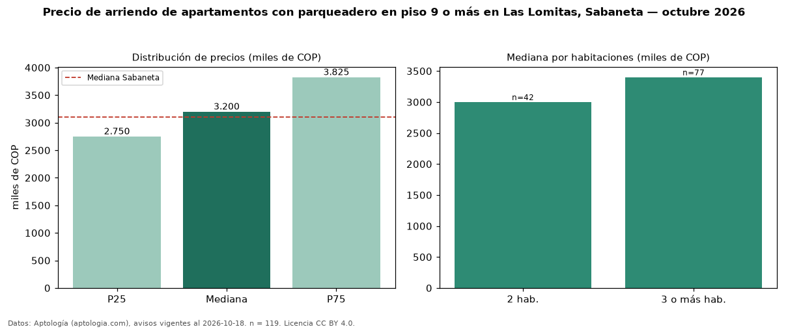

Precio de arriendo de apartamentos con parqueadero en piso 9 o más en Las Lomitas, Sabaneta — octubre 2026
Con 119 avisos vigentes, el canon mediano de apartamentos con parqueadero en piso 9 o más en arriendo en Las Lomitas, Sabaneta es COP 3,20 millones al mes. Frente a la mediana de los apartamentos con parqueadero en arriendo de Las Lomitas (COP 3,40 millones, n = 302), queda 6 % por debajo; este segmento reúne el 39 % de esos avisos. Por metro cuadrado, la mediana es COP 39.286/m² al mes (n = 119), 2 % por debajo de los apartamentos con parqueadero en arriendo de Las Lomitas (COP 40.000/m²). El área mediana anunciada es 78 m². El segmento con más oferta es el de 3 o más habitaciones (77 avisos, mediana COP 3,40 millones); pasar de 2 habitaciones a 3 o más habitaciones cambia la mediana +13 %. El estrato más frecuente es 4 (84 % de los avisos con estrato). La mediana de todos los apartamentos en arriendo de Sabaneta es COP 3,10 millones (+3 % de diferencia). La mitad central de los avisos va de COP 2,75 millones a COP 3,83 millones (razón 1,4), una dispersión baja. Datos: Aptología (aptologia.com), CC BY 4.0 — https://www.aptologia.com/arriendo/sabaneta. Archivos: PDF, CSV con las cifras y gráfica PNG.

| Avisos únicos | 119 |
|---|---|
| Percentil 25 | COP 2.750.000 |
| Mediana | COP 3.200.000 |
| Percentil 75 | COP 3.825.000 |
| Mediana por m² | COP 39.285 |
Fuente: avisos vigentes de portales inmobiliarios recopilados por Aptología, deduplicados (mínimo 30 avisos únicos por celda). Precios pedidos, no cerrados. Fecha: 2026-10-18.